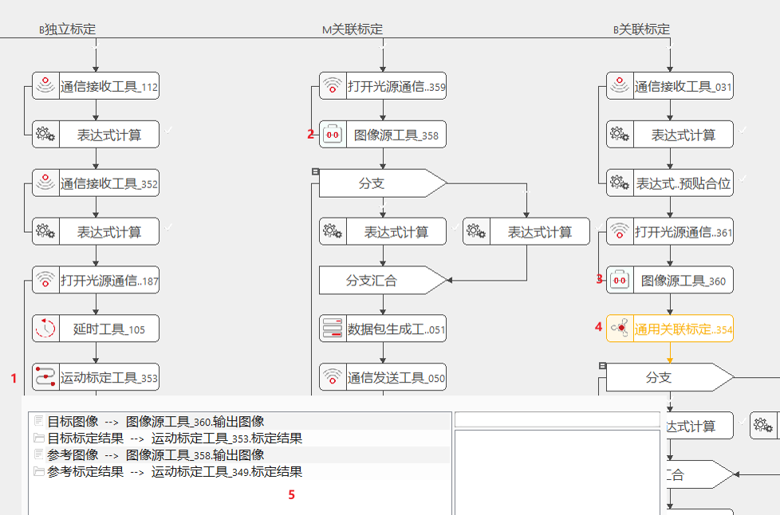
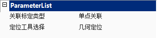
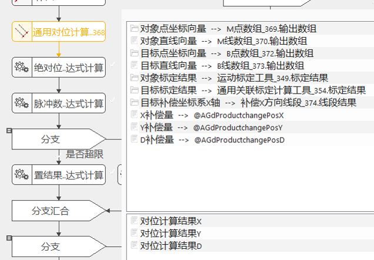
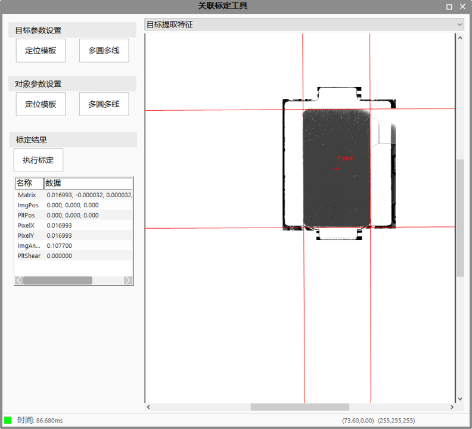

Công cụ này dùng để thực hiện tính toán hiệu chuẩn liên kết (relate calibration). Trong quy trình hiệu chuẩn liên kết: đã biết trước kết quả hiệu chuẩn độc lập của camera tham chiếu (reference camera), sau đó thực hiện chuyển động liên kết giữa camera tham chiếu và camera cần hiệu chuẩn (target camera), lấy được:
→ Dùng công cụ này để tính ra kết quả hiệu chuẩn đầy đủ cho camera cần hiệu chuẩn.
Như đã biết từ tài liệu “Công cụ hiệu chuẩn chuyển động”: sau khi hoàn thành hiệu chuẩn độc lập (dịch chuyển + xoay), ta có quan hệ chuyển đổi đầy đủ (dịch + xoay + tỉ lệ) giữa hệ tọa độ camera và hệ tọa độ cơ học. Trong thực tế, nhiều camera không thể tự làm được cả hai bước dịch + xoay → phải mượn camera đã hiệu chuẩn độc lập để tính phần quan hệ dịch chuyển còn thiếu.
Ví dụ điển hình: có 2 camera CCD1 và CCD2.
→ Dùng công cụ này để liên kết CCD1 ↔ CCD2, tính ra quan hệ dịch chuyển còn thiếu của CCD2 với hệ cơ học → có được hiệu chuẩn đầy đủ cho CCD2.
Khi tay gắp (end-effector) đã gắp sản phẩm, coi như vị trí tương đối giữa sản phẩm và tay gắp không thay đổi trong suốt quá trình di chuyển.
Quy trình thực tế:


Loại hiệu chuẩn liên kết
Hỗ trợ 2 loại:
Chế độ định vị Mark
Có 3 chế độ:
Chọn công cụ định vị
Chỉ hiện khi chọn chế độ Thủ công. Có:
Sau khi vào giao diện nâng cao:

| Hiện tượng | Cách khắc phục |
|---|---|
| Kết quả hiệu chuẩn bất thường | Vào giao diện Thuộc tính nâng cao → chuyển qua “Đặc trưng mục tiêu” và “Đặc trưng vật thể” để kiểm tra kết quả định vị / tìm vòng / tìm đường có đúng không → điều chỉnh lại tham số công cụ tìm → nhấn nút “Thực hiện hiệu chuẩn” để chạy lại và kiểm tra kết quả mới |
| Kết quả hiệu chuẩn bất thường | Kiểm tra thứ tự các Mark trên mục tiêu và vật thể có trùng khớp 1-1 không. Nếu sai thứ tự → chỉnh lại thứ tự xuất điểm của các công cụ tìm vòng / tìm đường |
| Kết quả hiệu chuẩn bất thường | Khi dùng chế độ DM code hoặc Tấm chuẩn (target): độ chính xác phụ thuộc hoàn toàn vào việc đọc DM code đúng. Nếu đọc sai DM → kết quả sai → cần chỉnh lại tham số đọc DM code rồi chạy lại hiệu chuẩn |
| Công cụ chạy rất lâu | Hoàn toàn bình thường khi dùng chế độ Tấm chuẩn: công cụ sẽ quét toàn bộ DM code trên cả hai ảnh để tìm đặc trưng chung → thời gian xử lý lâu là hợp lý |

| Tên tham số | Mô tả |
|---|---|
| Ảnh mục tiêu | Nối ảnh của camera cần hiệu chuẩn hoàn thiện |
| Kết quả hiệu chuẩn mục tiêu | Nối kết quả hiệu chuẩn đang cần bổ sung (thường là đã làm xong phần dịch chuyển (translation) → chỉ dùng ở chế độ “Đơn điểm liên kết” |
| Ảnh tham chiếu | Nối ảnh của camera đã hiệu chuẩn độc lập đầy đủ |
| Kết quả hiệu chuẩn tham chiếu | Nối kết quả hiệu chuẩn đầy đủ của camera tham chiếu |
| Tên tham số | Mô tả |
|---|---|
| Loại hiệu chuẩn liên kết | Đơn điểm hoặc Đa điểm (≥3 điểm) |
| Chế độ định vị Mark | Thủ công / DM code / Tấm chuẩn (target) |
| Chọn công cụ định vị | Định vị hình học / Định vị vùng / Định vị hình học cao cấp / Định vị vùng cao cấp (2 loại cao cấp phụ thuộc quyền USB dongle) |
| Tên tham số | Mô tả |
|---|---|
| Ảnh mục tiêu | Hiển thị thông tin ảnh mục tiêu đã nối (kích thước, loại ảnh…) |
| Ảnh tham chiếu | Hiển thị thông tin ảnh tham chiếu đã nối |
| Kết quả hiệu chuẩn | Kết quả hiệu chuẩn ĐẦY ĐỦ của camera cần hiệu chuẩn (đã bổ sung phần dịch chuyển) |
| Mark điểm ảnh tham chiếu | Kết quả định vị Mark trên ảnh tham chiếu → xem trong giao diện Thuộc tính nâng cao |
| Mark điểm ảnh mục tiêu | Kết quả định vị Mark trên ảnh mục tiêu → xem trong khung Result và Thuộc tính nâng cao |
| Kết quả tìm đường thẳng ảnh tham chiếu | Kết quả tìm line trên ảnh tham chiếu → xem trong Thuộc tính nâng cao |
| Kết quả tìm đường thẳng ảnh mục tiêu | Kết quả tìm line trên ảnh mục tiêu → xem trong khung Result và Thuộc tính nâng cao |
| Kết quả tìm vòng tròn ảnh tham chiếu | Kết quả tìm circle trên ảnh tham chiếu → xem trong Thuộc tính nâng cao |
| Kết quả tìm vòng tròn ảnh mục tiêu | Kết quả tìm circle trên ảnh mục tiêu → xem trong khung Result và Thuộc tính nâng cao |
| RMS | Sai số RMS của toàn bộ kết quả hiệu chuẩn |
| Kết quả thực thi | OK / NG |
| Thời gian thực thi | Thời gian chạy công cụ |
| Tên tham số | Mô tả |
|---|---|
| Kết quả hiệu chuẩn | Kết quả hiệu chuẩn hoàn chỉnh của camera cần hiệu chuẩn (được xuất ra cho các công cụ sau dùng), giống giá trị ở cửa sổ giám sát |
参见“\Samples\应用案例\对位类项目\Mesh贴Box项目\Mesh贴Box工程.gvp” 及其说明文档“应用案例\对位类项目\Mesh贴Box项目”。